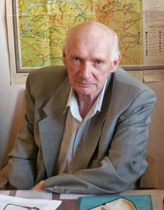

📜 Жизненный путь Александра Константиновича

Матвеев Александр Константинович (1926-2010) - Советский и российский лингвист, специалист в области уральской и северорусской диалектной лексики, и субстратной топонимики; занимался также этимологией, ономастикой, финно-угроведением, теорией языковых контактов. Член-корреспондент РАН с 7 декабря 1991 по секции гуманитарных и общественных наук (языкознание). Профессор УрГУ им. А. М. Горького (ныне УрФУ), основатель Уральской ономастической школы.
В 1949 году окончил факультет русского языка и литературы Хабаровского педагогического института.
С 1952 года — в УрГУ им. А. М. Горького. В 1961–2005 гг. — заведующий кафедрой русского языка и общего языкознания УрГУ. Доктор филологических наук (1970), профессор (1971).
А. К. Матвеев — автор более 270 научных публикаций, глава научной школы в области ономастики и топонимии. Внес значительный вклад в исследование практических и теоретических проблем этимологии, ономастики, диалектологии, древнейшей истории финно-угров. Был широко известен как блестящий лектор, педагог, эрудит.
Создатель топонимической экспедиции УрГУ — уникального научного сообщества, накопившего миллионные картотеки полевых лексических и ономастических материалов. Под руководством А. К. Матвеева составлены большинство томов основного корпуса «Словаря русских говоров Среднего Урала» (1981–1988). Он также руководил созданием «Словаря говоров Русского Севера» (тт. 1–3) и «Материалов к словарю финно-угро-самодийских заимствований в говорах Русского Севера» (т. 1, 2004). А. К. Матвеевым были подготовлены первый топонимический и первый оронимический словари Урала.
А. К. Матвеев был главным редактором всероссийского научного журнала «Вопросы ономастики» с момента его создания до своей смерти.
В УрГУ А. К. Матвеев в разное время читал курсы «Введение в языкознание», «Общее языкознание» и «Введение в славянскую филологию», а также спецкурсы: «Топонимия Урала», «Методы топонимических исследований», «Происхождение славян (лингвистический аспект)», «Меря и мерянский язык», «Индоевропейцы и индоевропейские языки». Под руководством А. К. Матвеева были защищены 6 докторских и более 30 кандидатских диссертаций.
Заслуженный деятель науки РСФСР (1988). Почетный профессор Уральского государственного университета (1996).
Хроника
- 1926 Родился в г. Свердловске 8 июля
- 1943 Окончил среднюю школу № 5 г. Свердловска
- 1943 Зачислен на военную службу в Красную Армию 27 ноября
- 1944 Курсант Челябинского военного авиационного училища штурманов и стрелков-радистов авиации дальнего действия с 2 февраля
- 1945 Окончил курс обучения стрелков-радистов АДД, 5 июля получил воинское звание «старшина»
- 1949 Окончил Хабаровский педагогический институт, факультет русского языка и литературы.
- 1950 Лаборант кабинета иностранных языков Свердловского педагогического института иностранных языков с 30 мая.
- 1950 Преподаватель латинского языка Свердловского педагогического института иностранных языков с 1 сентября.
- 1952 Преподаватель кафедры классической филологии Уральского государственного университета (УрГУ) с 1 февраля
- 1952 Зарегистрирован брак с Эльвирой Николаевной Орловой.
- 1954 Рождение сына Андрея 12 июля
- 1957 Преподаватель кафедры русского языка и общего языкознания УрГУ с 1 сентября.
- 1957 Старший преподаватель кафедры русского языка и общего языкознания УрГУ с 5 ноября
- 1958 Зарегистрирован брак с Галиной Алексеевной Чупиной.
- 1959 По результатам защиты диссертации «Финно-угорские заимствования в русских говорах Северного Урала» 30 декабря присуждена учёная степень кандидата филологических наук.
- 1960 Рождение дочери Юлии 21 сентября.
- 1961 Избран заведующим кафедрой русского языка и общего языкознания УрГУ 7 сентября (руководил кафедрой до 2005 г.).
- 1961 Начало работы Севернорусской топонимической экспедиции (позже – Топонимической экспедиции) Уральского университета: начальник экспедиции по 1983 г. Научный руководитель экспедиции до конца жизни
- 1962 Выход в свет первого выпуска периодического издания «Вопросы топономастики» (позднее «Вопросы ономастики» и др.): автор идеи, главный редактор издания до конца жизни; утверждён в звании доцента 28 июля
- 1967 Зарегистрирован брак с Тамарой Вячеславовной Марадудиной 18 июля.
- 1969 Рождение сына Константина 29 июля
- 1971 По результатам защиты диссертации «Русская топонимика финно-угорского происхождения на территории Севера европейской части СССР» присуждена учёная степень доктора филологических наук 27 января
- 1971 Утверждён в учёном звании профессора 30 апреля
- 1972 Рождение дочери Анны 19 января.
- 1979 Открытие научно-учебной Топонимической лаборатории при кафедре русского языка и общего языкознания УрГУ (с 1981 г. лаборатория – штатное подразделение УрГУ/ИГНИ): инициатор создания, разработчик программы; заведующий по 2001 год
- 1980 За словарь «Географические названия Урала» присвоено звание лауреата региональной премии им. краеведа В.П. Бирюкова
- 1982 Начало разработки комплексной программы Минвуза РСФСР «Духовная культура Урала»; инициатор, заместитель руководителя программы (по 1990-й).
- 1984 Награждён медалью «Ветеран труда» 6 сентября.
- 1988 Присвоено почётное звание «Заслуженный деятель науки РСФСР» 7 апреля.
- 1991 Избран членом-корреспондентом Российской академии наук 7 декабря.
- 1992 Научный руководитель и заместитель директора Научно-исследовательского института русской культуры при Уральском государственном университете (по 1994-й)
- 1994 Распоряжением Правительства Российской Федерации введён в первый состав Российского гуманитарного научного фонда (РГНФ)
- 1996 Присвоено звание «Ветеран труда УрГУ» 5 августа.
- 1996 Присвоено звание почётного профессора Уральского государственного университета.
- 1997 Главный редактор серии «Гуманитарные науки (история, филология, искусствоведение)» журнала «Известия Уральского государственного университета» (по 2002-й)
- 2001 Выход в свет первого тома обобщающей монографии «Субстратная топонимия Русского Севера» (в 2004 г. вышел 2-й том, в 2007 – 3-й том).
- 2003 Избран иностранным членом Финно-угорского общества (Финляндия, Хельсинки)
- 2004 Выход основанного на базе УрГУ первого номера российского журнала «Вопросы ономастики»; инициатор проекта, разработчик концепции журнала, главный редактор.
- 2005 Переведён на должность профессора-консультанта 1 сентября.
- 2005 Смерть сына Константина 17 ноября
- 2006 Опубликован обобщающий научный труд «Ономатология».
- 2010 Умер в г. Екатеринбурге 9 октября.
- 2011 Выход в свет книги «Материалы по мансийской топонимии горной части Северного Урала».
🗺️ География жизни учёного
Интерактивная карта с ключевыми точками маршрута Александра Константиновича. Нажмите на маркер, чтобы узнать подробности.
📖 Не просто прожитая жизнь
Биография А. К. Матвеева в документах и воспоминаниях, с фотографиями
📚 Избранные труды
Выборка из 10 публикации Александра Константиновича Матвеева для ознакомления. + указатель
Выберите публикацию из таблицы ниже, чтобы открыть её здесь.
📄 Список публикаций
| Название | Читать |
|---|---|
| Указатель трудов (Составитель А.В.Глазырин) | |
| Географические названия Урала | |
| Словарь финно-угро-самодийских заимствований | |
| Топонимия Урала как памятник языка и истории - доклад | |
| От Пай-Хоя до Мугоджар. Названия уральских гор и хребтов | |
| Топономия Урала 1985 | |
| Субстратная топонимия Русского Севера | |
| Епрь и Вепрь // История русского слова: ономастика и специальная лексика Северной Руси. — Вологда : ВГПУ, 2002. — С. 140–145 | |
| [ред.] Cловарь говоров Русского Севера | |
| Мансийская топонимия как историко-этнографический феномен // Этнолингвистика. Ономастика. Этимология : материалы междунар. науч. конф. С. 168–169 |